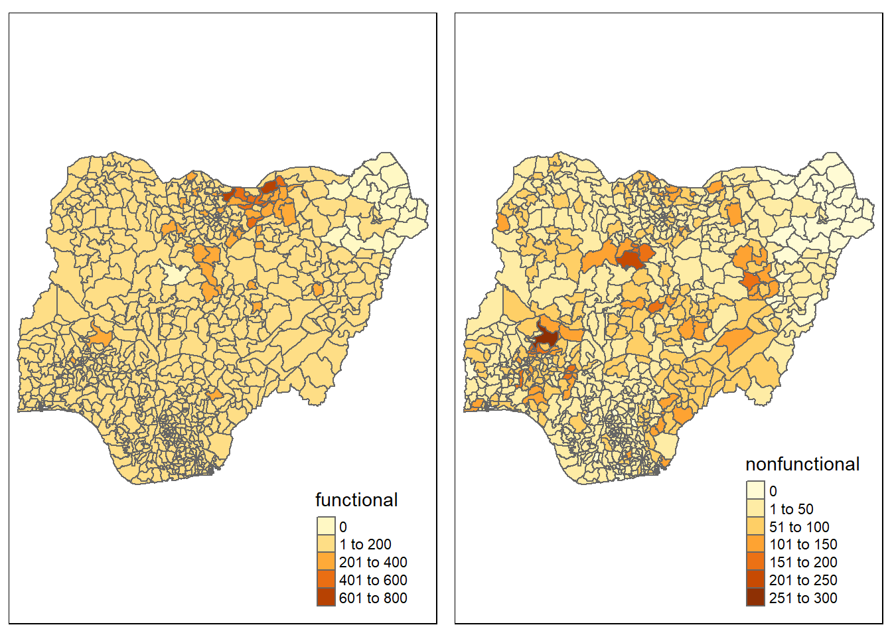
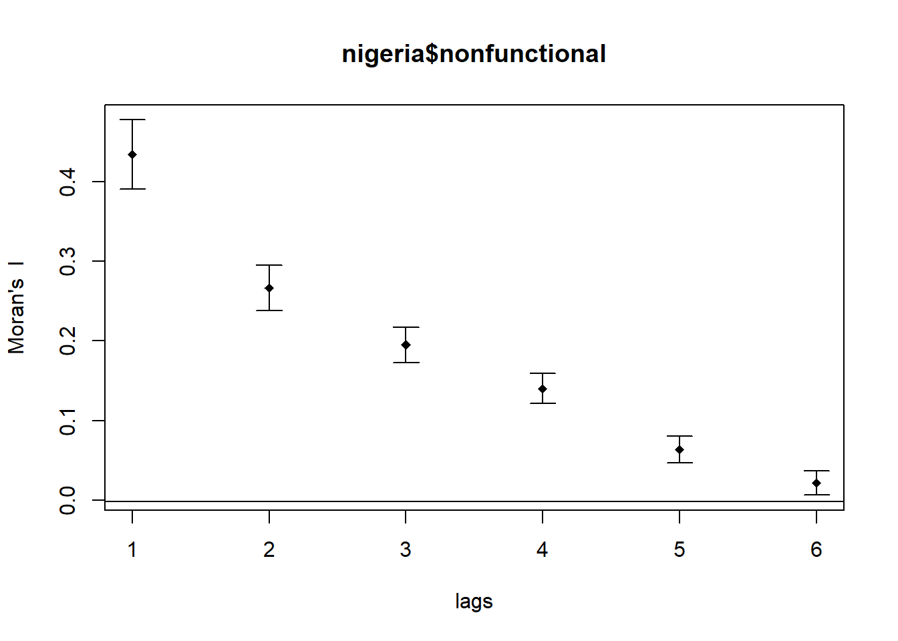
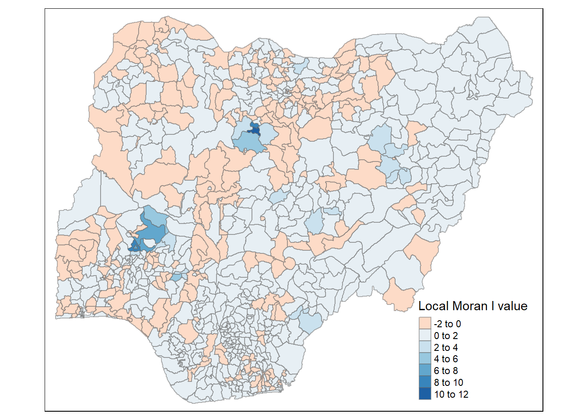
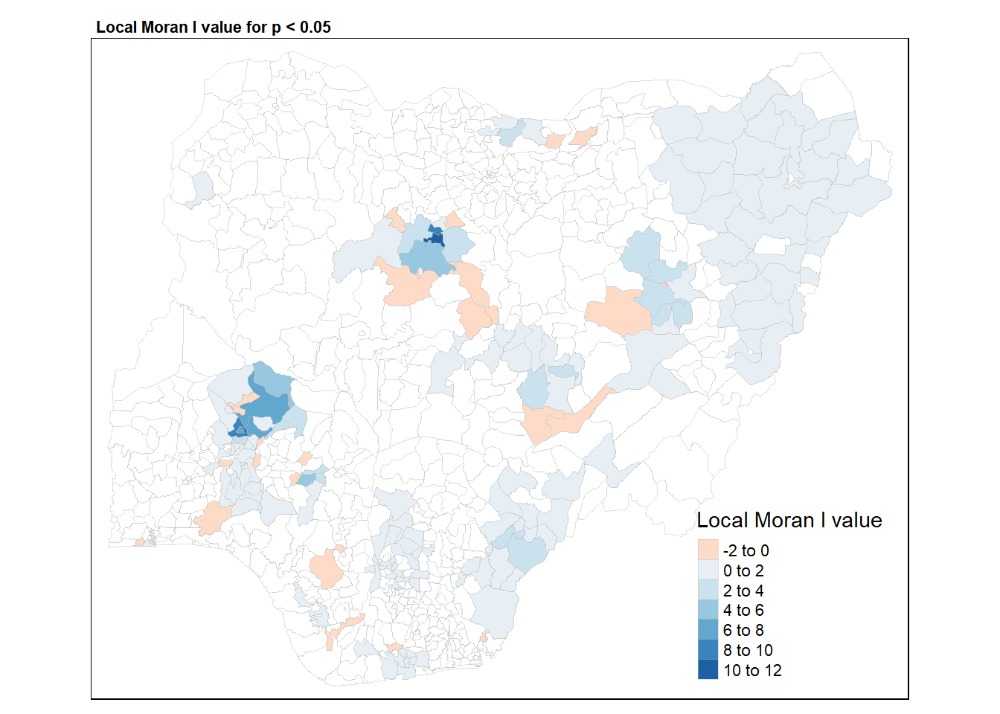
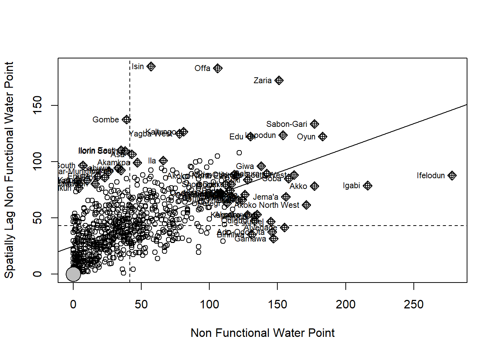

pacman::p_load(sf, spdep, tmap, tidyverse)Geospatial Analytics for Social Good - Understanding Nigeria Water functional and non-functional water point rate
Geospatial analytics hold tremendous potential to address complex problems facing society. In this study, you are tasked to apply appropriate global and local measures of spatial Association techniques to reveals the spatial patterns of Not Functional water points. For the purpose of this study, Nigeria will be used as the study country.
geospatial
sf
spdep
tmap
Introduction
The Spatial Autocorrelation measures spatial autocorrelation based on feature locations and feature values simultaneously. Given a set of features and an associated attribute, it evaluates whether the expressed pattern is clustered, scattered, or random. The tool calculates the Moran’s I index value as well as a z-score and p-value to assess the significance of this index. P-values are numerical approximations of the area under the curve for a known distribution, bounded by the test statistic.
In this study we will explore the computation of Global and Local Measure of Spatial Autocorrelation (GLSA) by using spdep package.
Libraries
For this study, we will use the following packages from CRAN.
-
sf- Support for simple features, a standardized way to encode spatial vector data. Binds to ‘GDAL’ for reading and writing data, to ‘GEOS’ for geometrical operations, and to ‘PROJ’ for projection conversions and datum transformations. Uses by default the ‘s2’ package for spherical geometry operations on ellipsoidal (long/lat) coordinates. -
tidyverse- Loading the core tidyverse packages which will be used for data wrangling and visualisation. -
tmap- Thematic maps are geographical maps in which spatial data distributions are visualized. This package offers a flexible, layer-based, and easy to use approach to create thematic maps, such as choropleths and bubble maps. -
spdep- A collection of functions to create spatial weights matrix objects from polygon ‘contiguities’, from point patterns by distance and tessellations, for summarizing these objects, and for permitting their use in spatial data analysis, including regional aggregation by minimum spanning tree; a collection of tests for spatial ‘autocorrelation’
Data Preparation
Two dataset will be used for this study:
- Nigeria.shp: A shapefile of Nigeria that consist of all the Level-2 Administrative Boundary (also known as Local Government Area)
- NigeriaAttribute.csv: A csv file containing multiple attributes of each Level-2 Administrative Boundary
Importing of data
We will use the st_read to import the shape file and read_csv to import the aspatial data into the R environment. We will then use a relational join left_join to combine the spatial and aspatial data together.
nigeria <- st_read(dsn = "data",
layer = "geoBoundaries-NGA-ADM2")
nigeriaA <- read_csv("data/nigeriaattribute.csv")nigeriaT <- nigeriaA %>%
rename ("Country" = "#clean_country_name",
"clean_adm2" = "#clean_adm2",
"status" = "#status_clean",
"lat" = "#lat_deg",
"long" = "#lon_deg") %>%
filter (Country == "Nigeria" & !is.na(status)) %>%
select (clean_adm2,status,lat,long)
nigeria <- nigeria %>%
st_transform(crs = 26391)
nigeriaT_sf <- st_as_sf(nigeriaT, coords = c("long", "lat"), crs = 4326)
nigeriaT_sf <- st_transform(nigeriaT_sf, crs = 26391)
st_crs (nigeria)
st_crs (nigeriaT_sf)f <- qtm(nigeria, "functional")
nf <- qtm(nigeria, "nonfunctional")
tmap_arrange(f,nf,ncol = 2)
Computing Contiguity Spatial Weights
For this study, we will be using the Queen contiguity weight matrix. The code chunk below will construct the weight matrix and subsequently implement the row-standardised weight matrix using the nb2listw() function.
wm_q <- poly2nb(nigeria,
queen=TRUE)
set.ZeroPolicyOption(TRUE)[1] FALSErswm_q <- nb2listw(wm_q,
style="W",
zero.policy = TRUE)
rswm_qCharacteristics of weights list object:
Neighbour list object:
Number of regions: 774
Number of nonzero links: 4440
Percentage nonzero weights: 0.7411414
Average number of links: 5.736434
1 region with no links:
86
Weights style: W
Weights constants summary:
n nn S0 S1 S2
W 773 597529 773 285.0658 3198.414Global Spatial Autocorrelation: Moran’s I
We will now perform Moran’s I statistics testing by using the moran.test() from spdep.
moran.test(nigeria$nonfunctional,
listw=rswm_q,
zero.policy = TRUE,
na.action=na.omit)
Moran I test under randomisation
data: nigeria$nonfunctional
weights: rswm_q n reduced by no-neighbour observations
Moran I statistic standard deviate = 20.043, p-value < 2.2e-16
alternative hypothesis: greater
sample estimates:
Moran I statistic Expectation Variance
0.433932927 -0.001295337 0.000471516 Computing Monte Carlo Moran’s I
The code chunk below performs permutation test for Moran’s I statistic by using moran.mc() of spdep. A total of 1000 simulation will be performed.
set.seed(1234)
bperm= moran.mc(nigeria$nonfunctional,
listw=rswm_q,
nsim=999,
zero.policy = TRUE,
na.action=na.omit)
bperm
Monte-Carlo simulation of Moran I
data: nigeria$nonfunctional
weights: rswm_q
number of simulations + 1: 1000
statistic = 0.43393, observed rank = 1000, p-value = 0.001
alternative hypothesis: greaterVisualising Monte Carlo Moran’s I
We will use a density plot to visualise the output of the Monte Carlo Moran’s I. First, we need to extract the res value and convert it into a dataframe. We then visualise the test statistic result using geom_density from the ggplot package.
monte_carlo <- as.data.frame(bperm[7])
ggplot(monte_carlo, aes(x=res)) +
geom_density(fill="lightblue") +
geom_vline(aes(xintercept=0.43393),
color="blue", linetype="dashed", size=1) +
labs(title = "Density plot of Monte Carlo Simulation of Moran's I", x = "Test Statistic", y = "Density") +
theme_minimal() 
Spatial Correlogram
A nonparametric spatial correlogram is another measure of overall spatial autocorrelation that does not rely on specifying a matrix of spatial weights. Instead, a local regression is fitted to the calculated covariances or correlations for all pairs of observations based on the distance between them. They show how correlated are pairs of spatial observations when you increase the distance (lag) between them - they are plots of some index of autocorrelation (Moran’s I or Geary’s c) against distance.Although correlograms are not as fundamental as variograms (a keystone concept of geostatistics), they are very useful as an exploratory and descriptive tool. For this purpose they actually provide richer information than variograms.
Compute Moran’s I correlogram
We will utilise the sp.correlogram() function from the spdep package and compute a 6-lag spatial correlogram of GDPPC. We then use the plot() and print() function to visualise the output.
We will illustrate the Moran’s I correlogram.
MI_corr <- sp.correlogram(wm_q,
nigeria$nonfunctional,
order=6,
method="I",
style="W")
plot(MI_corr)
print(MI_corr)Spatial correlogram for nigeria$nonfunctional
method: Moran's I
estimate expectation variance standard deviate Pr(I) two sided
1 (773) 4.3393e-01 -1.2953e-03 4.7152e-04 20.0433 < 2.2e-16
2 (773) 2.6647e-01 -1.2953e-03 2.0206e-04 18.8374 < 2.2e-16
3 (773) 1.9507e-01 -1.2953e-03 1.2189e-04 17.7863 < 2.2e-16
4 (773) 1.4019e-01 -1.2953e-03 8.7589e-05 15.1181 < 2.2e-16
5 (773) 6.3735e-02 -1.2953e-03 6.8779e-05 7.8413 4.459e-15
6 (773) 2.1698e-02 -1.2953e-03 5.7380e-05 3.0354 0.002402
1 (773) ***
2 (773) ***
3 (773) ***
4 (773) ***
5 (773) ***
6 (773) **
---
Signif. codes: 0 '***' 0.001 '**' 0.01 '*' 0.05 '.' 0.1 ' ' 1Computing local Moran’s I
To compute local Moran’s I, the localmoran() function of spdep will be used. It computes Ii values, given a set of zi values and a listw object providing neighbour weighting information for the polygon associated with the zi values.
Ii E.Ii Var.Ii Z.Ii Pr(z != E(Ii))
1 -0.32365786 -9.995243e-04 1.924638e-01 -0.73547576 0.46204980
2 0.07000542 -4.092463e-05 1.053077e-02 0.68258288 0.49487045
3 1.25819985 -1.627684e-03 4.181728e-01 1.94819847 0.05139122
4 -0.03537489 -5.427505e-05 5.954304e-03 -0.45773361 0.64714384
5 0.01201533 -2.590965e-04 3.988998e-02 0.06145673 0.95099547
6 0.00768085 -1.538445e-07 1.687859e-05 1.86960486 0.06153871Mapping the local Moran’s I
We have to combine the local Moran’s dataframe with the our exisiting Nigeria spatialdataframe before plotting. We will use the cbind() function.
nigeria.localMI <- cbind(nigeria,localMI) %>%
rename(Pr.Ii = Pr.z....E.Ii..)Mapping local Moran’s I values
Using choropleth mapping functions of tmap package, we can plot the local Moran’s I values by using the code chinks below.
tm_shape(nigeria.localMI) +
tm_fill(col = "Ii",
style = "pretty",
palette = "RdBu",
title = "Local Moran I value") +
tm_borders(alpha = 0.5)
nigeria.localMI.sub <- nigeria.localMI %>%
filter (Pr.Ii <= 0.05)
tm_shape(nigeria.localMI) +
tm_fill("white") +
tm_borders("grey", lwd = 0.5, alpha = 0.5) +
tm_shape(nigeria.localMI.sub) +
tm_fill (col = "Ii",
style = "pretty",
palette = "RdBu",
title = "Local Moran I value") +
tm_borders("grey", lwd = 0.5, alpha = 0.5) +
tm_layout(main.title = "Local Moran I value for p < 0.05",
main.title.size = 0.7,
main.title.fontface = "bold")
Creating a LISA Cluster Map
The LISA Cluster Map shows the significant locations color coded by type of spatial autocorrelation. The first step before we can generate the LISA cluster map is to plot the Moran scatterplot.
Plotting Moran scatterplot
The Moran scatterplot is an illustration of the relationship between the values of the chosen attribute at each location and the average value of the same attribute at neighboring locations.
The code chunk below plots the Moran scatterplot of Non Functional Water Point by using moran.plot() of spdep.
nci <- moran.plot(nigeria$nonfunctional, rswm_q,
labels=as.character(nigeria$shapeName),
xlab="Non Functional Water Point",
ylab="Spatially Lag Non Functional Water Point")
Preparing LISA map classes
We will now prepare the LISA map classes. We first need to retrieve the quadrant for each area. We will center the variable of interest and local Moran’s I around their mean. Subsequently, set a statistical significance level for our analysis and create the quadrant for categorising each area. Non-significant area with a p value of > 0.05 will not be categorised.
quadrant <- vector(mode="numeric",length=nrow(localMI))
DV <- nigeria$nonfunctional - mean(nigeria$nonfunctional)
C_mI <- localMI[,1] - mean(localMI[,1])
signif <- 0.05
quadrant[DV >0 & C_mI>0] <- 4
quadrant[DV <0 & C_mI<0] <- 1
quadrant[DV <0 & C_mI>0] <- 2
quadrant[DV >0 & C_mI<0] <- 3
quadrant[localMI[,5]>signif] <- 0